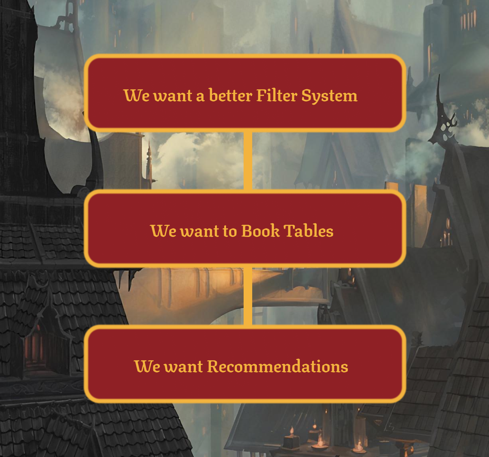

BoardGameCafe
Group Project, Website Development
Programming
UX Design
UI Design

Visual Studio Code

HTML

CSS

Javascript
Firebase

Adobe Xd
For this project we had to use the firebase database and work together with a company of our choice, analyze their digital solution and through research improve on it.
Jump to Solution

Download Report

Intro
PROBLEM STATEMENT
For our client we worked with Aarhus BoardGameCafe, at the time their website was severely lacking and after doing some primary research we created a series of questions which we believed important to answer in order to create a beneficial solution for our client.
How can Aarhus Brætspilscafé benefit from an improved digital solution?
How can a digital solution increase the number of customers?
How can a digital solution help people find relevant board games?
How can a digital solution bring people together and create a community around board games?
How can Aarhus Brætspilscafé benefit from an improved digital solution?
How can a digital solution increase the number of customers?
How can a digital solution help people find relevant board games?
How can a digital solution bring people together and create a community around board games?

What we learnt
FINDINGS & SOLUTIONS
We learnt from the client and users that the board game browsing system needed a rework, but we didn’t want to limit ourselves to just that and so we brainstormed on other possible reworks or additions to our clients website.
Interviews gave us a clear indication that users were limited in what games they can play because of a lack of players. Our idea of creating open tables would allow users to be able to open or join other groups of players, allowing them to play games they wouldn't be able to otherwise, while meeting new people and thus creating a close knit community around Aarhus Brætspilscafé.
The other main concept we took away from our brainstorm was the idea of giving players a board game recommendation. As we learned through our testing, most users have a very limited knowledge of board games, therefore restricting their choices. To solve this, we would provide them with suggestions based upon other interests they might have. This could be for example movies or video games.
Interviews gave us a clear indication that users were limited in what games they can play because of a lack of players. Our idea of creating open tables would allow users to be able to open or join other groups of players, allowing them to play games they wouldn't be able to otherwise, while meeting new people and thus creating a close knit community around Aarhus Brætspilscafé.
The other main concept we took away from our brainstorm was the idea of giving players a board game recommendation. As we learned through our testing, most users have a very limited knowledge of board games, therefore restricting their choices. To solve this, we would provide them with suggestions based upon other interests they might have. This could be for example movies or video games.
Visual Identity
WHAT WAS MY TASK
For colors we decided to use our clients primary colors of our client as we felt they represented the atmosphere of a cozy fireplace, using the dark gray (60%) and light gray (30%) colors in the background to create a dusky mood, while using the red (10%) as our highlight color to create a feeling of warmth.
It was my task to create the landing page, I wanted to make the website spoke quality and had a seamless and easy to use feel to it, giving the users the highest rated games on the top, with a slidable navigation similar to that of netflix, a site and feature that almost everyone is familiar with. Using firebase to allow for easy access to details and a simple filter system to find games that match your wants, be that player count or duration.
It was my task to create the landing page, I wanted to make the website spoke quality and had a seamless and easy to use feel to it, giving the users the highest rated games on the top, with a slidable navigation similar to that of netflix, a site and feature that almost everyone is familiar with. Using firebase to allow for easy access to details and a simple filter system to find games that match your wants, be that player count or duration.

Take Aways
BASIS FOR DATABASES
It was a great experience to be able to use firebase to organize all the board game details from their rating to player numbers and more. Seamlessly being able to open up further details and filter through the games to find what you’re looking for, but unfortunately firebase doesn’t offer the opportunity to have a multi-filter function. Although this solution isn’t fully functionable it was a great opportunity to improve my knowledge in using databases, making my life easier when it comes to creating CRUD solutions.
Similar projects